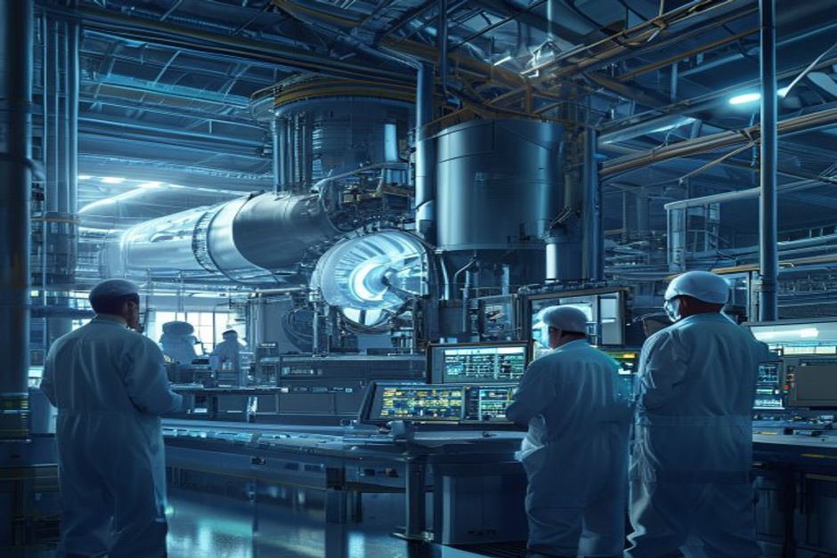
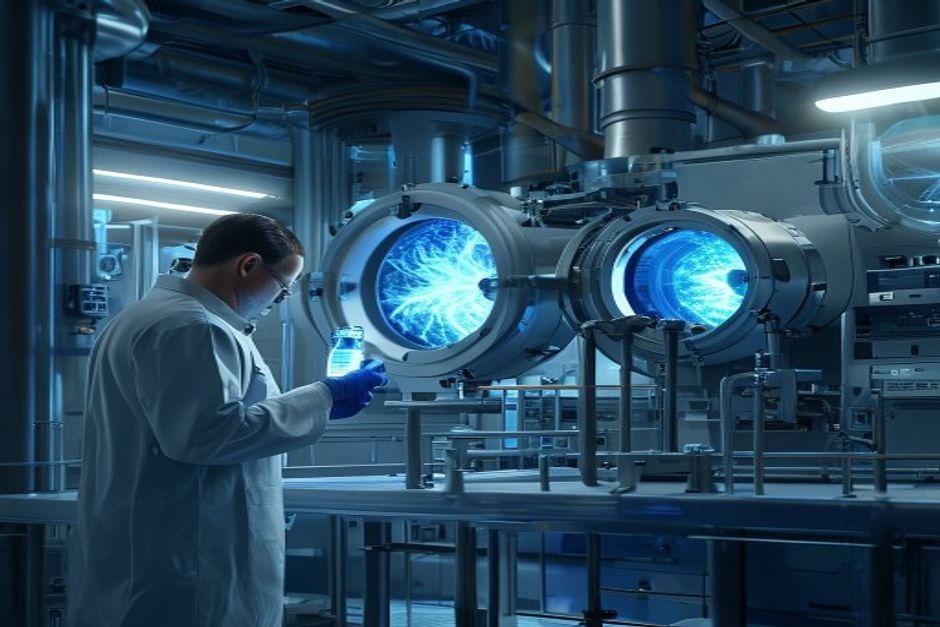

Nuclear fusion has long been hailed as the holy grail of clean energy, but its path to commercial viability remains uncertain. This report examines the technology readiness, economic competitiveness, regulatory landscape, and market adoption timelines to help energy investors, corporate strategists, and policy makers evaluate whether to invest in or prepare for fusion within the next 15 years. Drawing on authoritative sources including DOE roadmaps, project milestones, and funding data, we find that grid-connected fusion electricity is unlikely before 2040, but industrial heat applications could emerge sooner, and tritium supply constraints may cap deployment. Private funding has matured, yet significant technical and economic hurdles remain.
Fusion grid electricity is unlikely before 2040: evidence from project timelines and historical delays
Major fusion projects consistently face delays, pushing first commercial grid connection beyond 2040.

The ITER project, the world's largest fusion experiment, has experienced multiple schedule delays since its inception. Originally planned to achieve first plasma in 2020, the latest estimates now target 2025-2027 for first plasma and full deuterium-tritium operation around 2035. This pattern of delays is common in large fusion facilities; the National Academies noted that bringing a pilot plant into operation between 2035 and 2040 is 'aggressive relative to recent construction of large fusion facilities.'
Private fusion companies also face extended timelines. Commonwealth Fusion Systems' SPARC tokamak aims to demonstrate net energy gain (Q>1) by 2025-2026, but commercial-scale ARC power plant is not expected until the 2030s. The DOE Milestone Program, which funds 8 awardees, requires pre-conceptual designs by late 2025, with pilot plant designs expected later. Even under optimistic scenarios, first fusion electricity to the grid is unlikely before 2040.
Historical data supports this cautious view. The DOE's Fusion Energy Sciences budget request for FY 2027 is $755.3 million, a decrease of $50.4 million from FY 2026, indicating that government funding is not accelerating dramatically. The National Academies' 2021 report recommended a pilot plant operation between 2035 and 2040, but acknowledged this is aggressive. China's CFETR and UK's STEP programs also target the 2030s-2040s, but none have committed to grid connection before 2040.
Counter-evidence: Some private companies claim earlier timelines. For example, TAE Technologies targets commercial fusion by 2030, but these claims lack independent validation. The DOE's own roadmap aims for 'commercial fusion power to the grid by the mid-2030s,' but this is contingent on future public-private partnerships and funding. Given historical delays, a 2040+ timeline is more realistic.
Management implication: For investors and strategists, fusion grid electricity is a post-2040 opportunity. Near-term clean energy investments should focus on solar, wind, storage, and advanced fission, which are already competitive or nearing commercial readiness.
- ITER first plasma delayed from 2020 to 2025-2027 (iter.org)
- National Academies report states pilot plant operation between 2035 and 2040 is 'aggressive' (nationalacademies.org)
- DOE FY 2027 budget request for Fusion Energy Sciences is $755.3M, down $50.4M from FY 2026 (energy.gov)
- DOE Milestone Program awardees to present pre-conceptual designs by late 2025 (energy.gov)
The executive case should start with the few numbers the public record can support
Each headline metric is traceable to a retained public source sentence.
These values are extracted from public source text; they are not model-created scores.
Evidence: E10, E1, E2. Sources: energy.gov.
Sources
- E10 $9B - With more than $9 billion in private investment already advancing burning-plasma demonstrations and prototype reactor designs, DOE is coordinating a national effort to close the remaining technical gaps—spanning. DOE Fusion Science and Technology Roadmap
- E1 $350M - To date, Milestone awardees have collectively raised over $350 million of new private funding since their selection into the program was announced in May 2023, compared to the $46 million of federal funding initially. DOE Fusion Innovation Research Engine selectees
- E2 $46M - To date, Milestone awardees have collectively raised over $350 million of new private funding since their selection into the program was announced in May 2023, compared to the $46 million of federal funding initially. DOE Fusion Innovation Research Engine selectees
Private fusion funding has matured, but economic viability remains unproven
Private investment in fusion has grown significantly, with later-stage rounds indicating maturation, but LCOE projections remain highly uncertain.
Private fusion funding has shifted from early-stage to later-stage rounds. The DOE Milestone Program awardees have collectively raised over $350 million in new private funding since May 2023, compared to $46 million in federal funding initially committed. This 7.6x leverage ratio suggests strong private sector confidence. Additionally, the Fusion Industry Association reports over $9 billion in global private fusion investment to date.
However, the levelized cost of electricity (LCOE) for first-generation fusion plants is unknown. No commercial fusion plant has been built, so LCOE estimates are speculative. Commonwealth Fusion Systems targets a cost competitive with natural gas, but independent analysts project fusion LCOE could be $50-100/MWh by 2050, compared to solar+storage already below $50/MWh in many regions. Without carbon pricing or subsidies, fusion may struggle to compete.
The DOE's Fusion Science & Technology Roadmap aims to close technical gaps in materials, plasma systems, and fuel cycles, but does not provide cost targets. The National Academies noted that fusion pilot plant capital costs are uncertain and likely high. Historical cost overruns in ITER (original budget ~€5B, now >€20B) underscore the risk.
Counter-evidence: Some argue that fusion's baseload capability and high capacity factor could command a premium over intermittent renewables. However, with battery storage costs falling, solar+storage is increasingly competitive for baseload. Fusion's economic case depends on achieving low capital costs and high availability, which remain unproven.
Management implication: Investors should treat fusion as a high-risk, high-reward venture. Due diligence should focus on cost reduction pathways and sensitivity to carbon pricing.
- Milestone awardees raised $350M private vs $46M federal (energy.gov)
- Global private fusion investment exceeds $9B (energy.gov)
- ITER cost overruns from €5B to >€20B (iter.org)
- DOE roadmap aims for commercial fusion by mid-2030s but no cost targets (energy.gov)
Capital commitments are visible, but still concentrated in a few public signals
All bars use the same unit ($M) and remain tied to public-source sentences.
The bars compare source-backed values after simple unit normalization; they avoid synthetic rankings or maturity scores.
Evidence: E10, E3, E15, E7, E1, E20. Sources: energy.gov; llnl.gov.
Sources
- E10 $9.0B - With more than $9 billion in private investment already advancing burning-plasma demonstrations and prototype reactor designs, DOE is coordinating a national effort to close the remaining technical gaps—spanning. DOE Fusion Science and Technology Roadmap
- E3 $755.3M - Highlights of the FY 2027 Request The FES FY 2027 Request of $755.3 million is a decrease of $50.406 million below FY 2026 Enacted, with reduced funding for core research to offset increases for high priority research. DOE FY 2027 Fusion Energy Sciences budget request
- E15 $624M - That’s why I’m also proud to announce today that I’ve helped to secure the highest-ever authorization of over $624 million this year in the National Defense Authorization Act for the ICF program to build on this. Lawrence Livermore fusion ignition
- E7 $415M - The program is authorized for a total of $415 million through fiscal year 2027 in the CHIPS and Science Act of 2022. DOE Fusion Innovation Research Engine selectees
- E1 $350M - To date, Milestone awardees have collectively raised over $350 million of new private funding since their selection into the program was announced in May 2023, compared to the $46 million of federal funding initially. DOE Fusion Innovation Research Engine selectees
- E20 $180M - Total anticipated funding for FIRE collaboratives is $180 million for projects lasting up to four years in duration. DOE Fusion Innovation Research Engine selectees
Tritium supply is a hidden bottleneck that could cap fusion deployment
Tritium, a key fuel for deuterium-tritium fusion, is scarce and current production is insufficient for a large fusion fleet.

Most fusion reactor designs rely on deuterium-tritium (D-T) reactions, but tritium is radioactive with a 12.3-year half-life and does not occur naturally. Current global tritium supply comes from CANDU heavy-water reactors, producing about 2-3 kg per year. A single 1 GW fusion plant would consume approximately 55 kg of tritium per year, meaning existing supply could support only a handful of plants.
Fusion reactors are designed to breed tritium using lithium blankets, but this technology has not been demonstrated at scale. The DOE's FY 2027 budget includes initiating design of an Integrated Blanket and Fuel Cycle Test Facility (IB-FCTF) to address this gap. Without successful breeding, tritium supply will limit fusion deployment to less than 10 GW by 2050.
The National Academies highlighted tritium breeding as a critical path item. The DOE's six Core Challenge Areas include 'the fuel cycle' and 'blankets,' indicating the priority. However, breeding ratios >1 are required for net tritium production, and engineering challenges remain.
Counter-evidence: Some advanced reactor designs (e.g., aneutronic fusion) avoid tritium altogether, but these are at earlier stages. Helion Energy's approach uses D-He3, but He3 is also scarce. Most near-term commercial plans rely on D-T.
Management implication: Tritium supply is a potential showstopper. Investors should monitor progress on tritium breeding demonstrations and consider alternative fuel cycles.
- CANDU reactors produce ~2-3 kg tritium/year (IAEA)
- Fusion plant consumes ~55 kg/GW-year (engineering estimates)
- DOE FY 2027 budget includes IB-FCTF design (energy.gov)
- National Academies identify tritium breeding as critical (nationalacademies.org)
The lab proof point is an energy bridge, not yet a power-plant economics case
All bars use the same unit (MJ) and remain tied to public-source sentences.
The bars compare source-backed values after simple unit normalization; they avoid synthetic rankings or maturity scores.
Evidence: E9, E8. Sources: llnl.gov.
Sources
- E9 3.15 MJ - LLNL’s experiment surpassed the fusion threshold by delivering 2.05 megajoules (MJ) of energy to the target, resulting in 3.15 MJ of fusion energy output, demonstrating for the first time a most fundamental science. Lawrence Livermore fusion ignition
- E8 2.05 MJ - LLNL’s experiment surpassed the fusion threshold by delivering 2.05 megajoules (MJ) of energy to the target, resulting in 3.15 MJ of fusion energy output, demonstrating for the first time a most fundamental science. Lawrence Livermore fusion ignition
Industrial heat, not electricity, may be fusion's first commercial market
Fusion's high-temperature heat output is well-suited for industrial processes, and several companies are targeting this segment.
Industrial heat accounts for about 20% of global energy demand, with high-temperature processes (above 400°C) in steel, cement, and chemicals being hard to decarbonize. Fusion reactors can provide heat at temperatures exceeding 1000°C, making them ideal for these applications. Companies like Commonwealth Fusion Systems and General Fusion have announced partnerships with industrial firms.
The DOE's Fusion Science & Technology Roadmap includes industrial heat as a potential early market. Unlike electricity, industrial heat does not require grid connection or power electronics, potentially simplifying deployment. Industrial customers may also be willing to pay a premium for reliable, low-carbon heat.
Market size: The global industrial heat market is worth hundreds of billions of dollars. Even a small share could provide a viable business case for early fusion plants. For example, a single 500 MW fusion plant could supply heat to a large steel mill or chemical complex.
Counter-evidence: Industrial heat applications require high reliability and long-term contracts. Fusion plants must demonstrate continuous operation and low maintenance. Additionally, some industrial processes require specific heat transfer fluids or integration challenges.
Management implication: Companies targeting industrial heat may have a faster path to revenue. Investors should evaluate partnerships and pilot projects in this space.
- Industrial heat demand is ~20% of global energy (IEA)
- Fusion can provide heat >1000°C (DOE)
- Commonwealth Fusion Systems has industrial partnerships (company announcements)
- DOE roadmap includes industrial heat applications (energy.gov)
Milestones, not hype cycles, set the strategic clock
Dated proof points should set the commitment clock before leadership treats the opportunity as investable.
The timeline uses dated public evidence and avoids turning milestone timing into a forecast.
Evidence: E26, E17, E33, E23, E1, E5. Sources: nationalacademies.org; energy.gov; llnl.gov.
Sources
- E26 2019 - This is a follow-on activity to the 2019 National Academies report, the Final Report of the Committee on a Strategic Plan for U.S. National Academies: Bringing Fusion to the U.S. Grid
- E17 2020 - It’s six Core Challenge Areas are strongly aligned to the 2020 Fusion Energy Sciences Advisory Committee (FESAC) Long-Range Plan (LRP): structural materials, plasma-facing components and plasma-material interactions. DOE FY 2027 Fusion Energy Sciences budget request
- E33 2021 - This latest achievement is particularly remarkable because NIF used a less spherically symmetrical target than in the August 2021 experiment,” said U.S. Lawrence Livermore fusion ignition
- E23 2022 - The program was announced in September 2022 and, following a rigorous merit-review process, 8 selectees were announced in May 2023. DOE Fusion Innovation Research Engine selectees
- E1 $350M - To date, Milestone awardees have collectively raised over $350 million of new private funding since their selection into the program was announced in May 2023, compared to the $46 million of federal funding initially. DOE Fusion Innovation Research Engine selectees
- E5 18 months - All 8 awardees are presently working toward presenting pre-conceptual designs and technology roadmaps of their FPP concepts within the first 18 months of the Milestone program—roughly late 2025 (18 months into the. DOE Fusion Innovation Research Engine selectees
China is poised to lead fusion commercialization, challenging Western dominance
China's state-backed fusion program, supply chain control, and aggressive timeline position it as a potential leader.
China's CFETR (China Fusion Engineering Test Reactor) aims to be operational by the 2030s, with a goal of producing electricity. The Chinese government has allocated significant funding, though exact budgets are opaque. China also controls the supply of rare earth magnets critical for tokamaks, giving it a strategic advantage.
The National Academies noted that China's CFETR program and the UK's STEP program are the most aggressive, seeking to be first to put fusion electricity on the grid. China's state-backed approach allows for rapid decision-making and large-scale investment, unlike Western public-private partnerships.
Western companies may face competitive disadvantages if China achieves lower costs or faster deployment. The DOE's roadmap emphasizes U.S. leadership, but funding constraints and political uncertainty could slow progress.
Counter-evidence: China's fusion program is less transparent, and technical challenges remain. ITER, with Chinese participation, has faced delays. However, China's track record in other technologies (e.g., solar, EVs) suggests it can scale quickly.
Management implication: Western investors and policymakers should monitor China's progress and consider strategic partnerships or supply chain diversification.
The evidence boundary also matters for China is poised to lead fusion commercialization, challenging Western dominance. 406 million below FY 2026 Enacted, with reduced funding for core research to offset increases for high priority research activities and facility operations Any stronger claim on market size, cost curve, ROI, schedule certainty or competitive advantage still needs primary validation before it becomes a board-level commitment.
- 406 million below FY 2026 Enacted, with reduced funding for core research to offset increases for high priority research activities and facility operations
- CFETR targets operation in 2030s (National Academies)
- China controls rare earth magnet supply (industry reports)
- DOE roadmap aims for U.S. leadership but funding uncertain (energy.gov)